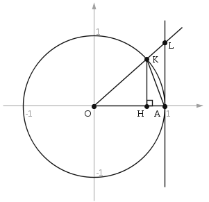

$$\lim_{x\rightarrow0}\frac{\sin\left(x\right)}x=1$$
Доказательство
Рассмотрим односторонние пределы $\lim_{x\rightarrow0-0}\frac{\sin\left(x\right)}x$ и $\lim_{x\rightarrow0+0}\frac{\sin\left(x\right)}x$
Докажем, что каждый из этих пределов равен единице. Тогда и предел $\lim_{x\rightarrow0}\frac{\sin\left(x\right)}x$ также будет равняться единице. Пусть $x\in\left(0;\frac{\mathrm\pi}2\right)$ и отложим этот угол на тригонометрической окружности (рис. 1).

рис. 1
Этот луч будет пересекать единичную окружность в точке $K$, а вертикальную касательную, проведенную в точке $A\left( 1;\ 0 \right)$, – в точке $L$. Через точку $H$ обозначим проекцию точки $K$ на горизонтальную ось косинусов.
Рассмотрим треугольники $OAK$, $\quad OAL$ и круговой сектор $OAK$. Очевидно следующее двойное неравенство:
$${{S}_{\Delta OAK}}<{{S}_{\ OAK}}<{{S}_{\Delta OAL}}\quad(1)$$
Абсцисса точки $K$ равна $OH=\cos x$, а ее ордината — $KH=\sin x$ (равна высоте $\Delta OAK$). А тогда
$${{S}_{\Delta OAK}}=\frac{1}{2}\cdot OA\cdot KH=\frac{1}{2}\cdot 1\cdot \sin x=\frac{\sin x}{2}$$
Здесь $OA=1$ как радиус тригонометрической окружности.
Площадь центрального сектора круга радиуса $R=1$ с центральным углом $x$ равна
$${{S}_{\text{sect}\ OAK}}=\frac{1}{2}{{R}^{2}}x=\frac{x}{2}$$
Площадь $\Delta OAL$
$${{S}_{\Delta OAL}}=\frac{1}{2}\cdot OA\cdot AL=\frac{1}{2}\cdot 1\cdot \text{tg}\ x=\frac{\text{tg}\ x}{2}$$
Итак, неравенство (1) перепишется в виде:
$$\frac{\sin x}{2}<\frac{x}{2}<\frac{\text{tg}\ x}{2}$$
Так как для $x\in \left( 0;\ \frac{\pi }{2} \right)$ все части этого неравенства положительны, поэтому его можно записать следующим образом:
$$\frac{1}{\sin x}>\frac{1}{x}>\frac{1}{\text{tg}\ x}=\text{ctg}\ x=\frac{\cos x}{\sin x}$$
После умножения на $\sin x>0$ получаем:
$$1>\frac{\sin x}{x}>\cos x$$
или
$$\cos x<\frac{\sin x}{x}<1$$
Переходя во всех частях последнего неравенства к пределу при $x\to 0+0$, будем иметь:
$$\underset{x\to 0+0}{\mathop{\lim }}\,\cos x<\underset{x\to 0+0}{\mathop{\lim }}\,\frac{\sin x}{x}<\underset{x\to 0+0}{\mathop{\lim }}\,1$$
$$1<\underset{x\to 0+0}{\mathop{\lim }}\,\frac{\sin x}{x}<1$$
По теореме о зажатой переменной делаем вывод, что и
$$\underset{x\to 0+0}{\mathop{\lim }}\,\frac{\sin x}{x}=1$$
Вычислим теперь $\underset{x\to 0-0}{\mathop{\lim }}\,\frac{\sin x}{x}$:
$$\underset{x\to 0-0}{\mathop{\lim }}\,\frac{\sin x}{x}\ \left[ \frac{0}{0} \right]\ \left\| \begin{matrix} & x=-t \\ & t\to 0+0 \\ \end{matrix} \right\|=\underset{t\to 0+0}{\mathop{\lim }}\,\frac{\sin \left( -t \right)}{-t}=\underset{t\to 0+0}{\mathop{\lim }}\,\frac{-\sin t}{-t}=$$
$$=\underset{t\to 0+0}{\mathop{\lim }}\,\frac{\sin t}{t}\ \left\| \begin{matrix} & t=x \\ & x\to 0+0 \\ \end{matrix} \right\|=\underset{x\to 0+0}{\mathop{\lim }}\,\frac{\sin x}{x}=1$$
То есть $\underset{x\to 0-0}{\mathop{\lim }}\,\frac{\sin x}{x}=1$.
А, таким образом, и $\underset{x\to 0}{\mathop{\lim }}\,\frac{\sin x}{x}=1$.